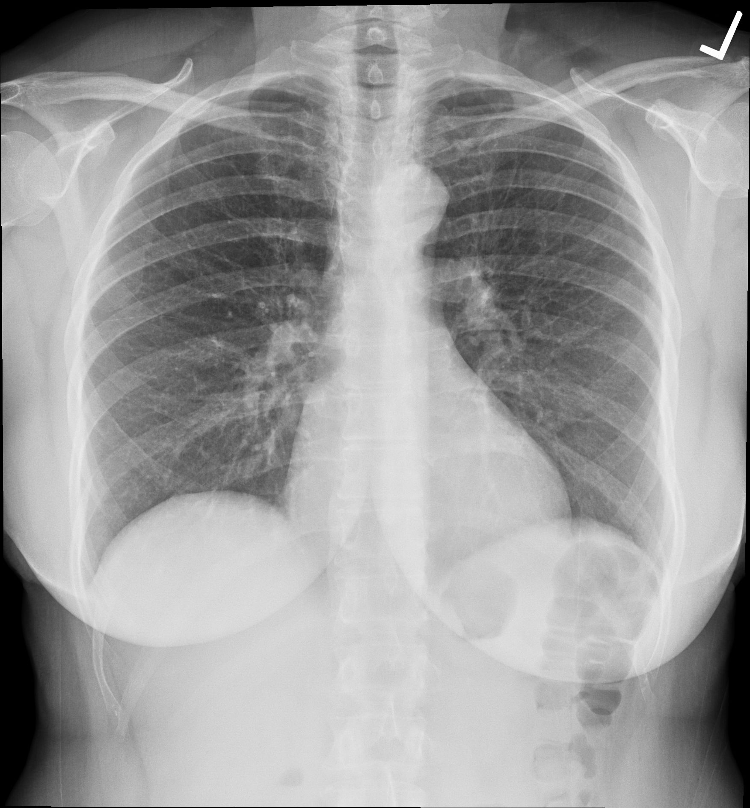

Conceptual image-formation schematic · not to scale
A radiograph combines contributions from everything the beam passes through. Two objects at different depths can occupy the same place in the resulting image. That makes an extra view useful: a changed angle can separate structures that overlapped.
FICTIONAL WORKED SCENARIO
An earlier PA chest image and a later portable AP image show different apparent cardiac sizes. A change in silhouette alone cannot establish true enlargement. Projection geometry can contribute to magnification.
In the lab, move the object away from a detector while keeping the source-to-detector distance fixed. Its shadow enlarges. This isolates one geometric effect; real radiographs also depend on positioning, inspiration and acquisition technique.
Radiographs commonly examine the chest and skeleton. They use ionizing radiation. A normal bone image does not exclude every soft-tissue injury; image selection and interpretation depend on the clinical question.

Frontal chest radiograph showing the lungs, cardiac silhouette and ribs. The source identifies this as a normal digitally acquired chest radiograph.
Ptrump16 · CC BY-SA 4.0 · Unchanged
Independent teaching image; not the patient from the fictional scenario.